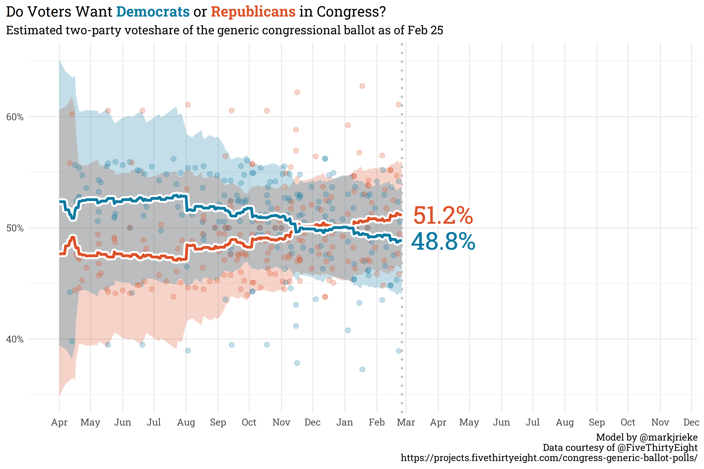
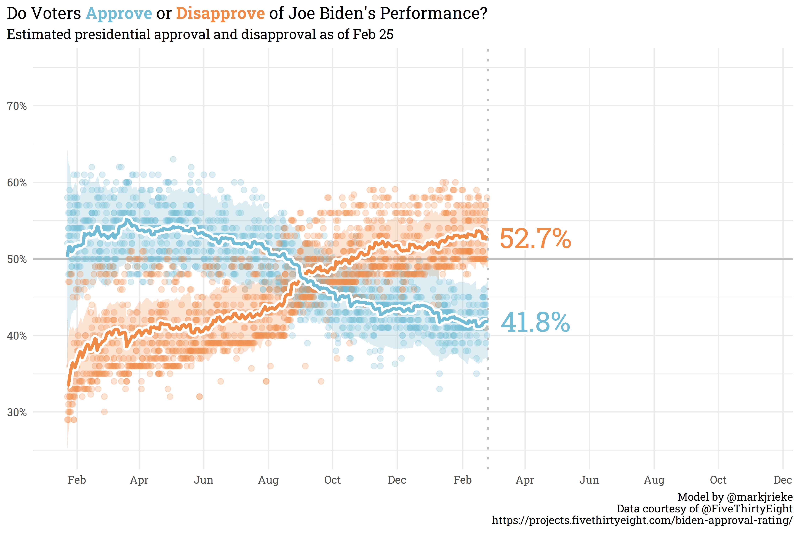
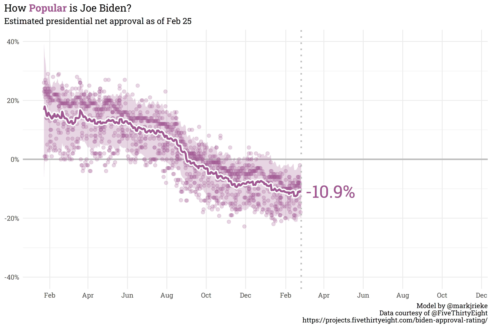

I’ve never built a house (shocking, I know), but from far too much time spent watching HGTV, I understand the basic gist of it. You lay a foundation, setup framing and walls, route mechanical and electrical, then work on final touches like painting and decorating (to be sure, I’m hand-waiving a lot of detail away here). There’s a bit of wiggle room in the order you go about things — you can paint the living room walls before the ones in the bathroom or vice versa — but some steps definitely need to happen before others — you can’t paint either rooms until the walls themselves are actually up!
The same logic applies for data science — there are certain activities that are exceptionally hard to do without the proper infrastructure in place. Sometimes, we’re asked to chase after ~shiny objects~ without the support system to do so, when doing so may actually make our job more difficult in the future!
I recently stumbled across an article that summarized this really succinctly with the following graphic: The Data Science Hierarchy of Needs.

Collect
At a baseline, to do any sort of data work you need to actually have data on hand to work with! Whether there’s a formal process for collecting data or you need to gather data from disparate public sources, getting raw data out of the wild and into your system is the first step to being able to do any sort of analysis. In my case, as an analyst with a hospital’s patient satisfaction group, we need to actually send patients surveys.
Move/Store
Once you know where your data is coming from, setting up a reliable data flow from the source to your environment is needed. This is where a lot of headache can come from. Gathering data can be difficult but if the data is going to be used once for a one-off analysis, you don’t need to worry too much about repeatability, edge cases, or computing speed. Once you need to gather new data, thinking about infrastructure around new data gathering becomes much more important. A good chunk of the last eight months of my job has been working with our new survey vendor on this piece of the puzzle: standardizing data layouts, catching bugs in the pipeline, and setting up standards for access.
Explore/Transform
With a reliable flow of new/updated data streaming in, you now need to make sure the data is appropriate for general use. Automated anomaly/fraud/bot detection, light wrangling, and removing errant responses can all be considered a part of this single stage. This is necessary to ensure that any analyses you do or models you build are based on what you expect from the underlying data.
Aggregate/Label
I can’t recall the source, but the following quote about data science has stuck with me: “99% of data science work is counting — sometimes dividing.” A significant portion of my day-to-day work involves the tried-and-trusted group_by() %>% summarise() pipeline. Making counts, percentages, running totals, etc. accessible to stakeholders via a dashboard can likely answer ~80% of the questions an analyst would have to field otherwise. It’s so, so important, however, to have the collection, storage, and preparation stages setup prior to ensure that stakeholders can trust that the data they’re seeing is accurate.
Learn/Optimize
If 80% of questions asked can be solved with grouped summaries and 20% require a model, it’s likely that 80% of that remaining 20% can be solved by a simple linear model. For example, “What effect does patient age have on their overall satisfaction?” can be answered with lm(satisfaction_score ~ age). As relationships become more complex, you can add more terms to the model, or switch model architectures, but — in my own experience — the majority of modeling in practice can be represented by linear models (and, by extension, regularized models via {glmnet}).
Complex Models
Finally, a small subset of problems may require a more complex or powerful model type. But before you spin your wheels building a neural net or some other wacky architecture, you should first check if something simpler gets you what you need.
Some Closing Thoughts
This post is partially meant to be able to share some useful info and partially a reminder to me to look for the simple solution! I have a tendency to start off with something complex then realize that I could save a lot of work if I just switch to something simpler. The three baseline layers upstream of my domain are super important and definitely need oversight from someone with an eye for data engineering.
Polling Bites
The generic congressional ballot is starting to show some movement away from even split as Republicans have slowly climbed to 51.2% in the polls and Democrats have fallen to 48.8%.

Biden’s net approval hasn’t shifted significantly since the last post — currently sitting at 10.9% underwater with 41.8% approval and 52.7% disapproval.


(p.s., I’ve updated the color palettes here with the {MetBrewer} package, which provides colorblind friendly palettes based on artwork in hte Metropolitan Museum of Art in New York)